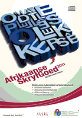
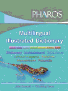

|
About CTexT
|
Previous Top |
Who are we?
The Centre for Text Technology (CTexT®) has been a self-supporting unit of the Research Unit: Languages and Literature in the South African Context at the Potchefstroom Campus of the North-West University since 2004.
What do we do?
CTexT combines innovative research with dynamic development to remain at the forefront of trends in text technological applications. Activities at CTexT include the development of spelling checkers for 15 languages in Africa, research on the emulation of cognitive processes, the development of computer games for language learning, and research on the latest trends in machine translation.
Why do we do it?
Human language technology is considered world-wide to be one of the most important technologies for the establishment of multilingualism. At CTexT, we are committed to contributing to the promotion and expansion of a multilingual society.
Our contact information:
Tel: 018 299 1541
Fax: 018 299 1571
Web: www.nwu.ac.za/ctext
CTexT's product ranges
1. Proofing tools for Microsoft® Office
Afrikaanse SkryfGoed* containing spelling checker, grammar checker, thesaurus and hyphenator;
isiNdebele Spelling Checker 1.1 & Hyphenator
isiXhosa Spelling Checker 1.2 & Hyphenator
isiZulu Spelling Checker 1.2 & Hyphenator
Sesotho sa Leboa Spelling Checker 1.2 & Hyphenator
Sesotho Spelling Checker 1.1 & Hyphenator
Setswana Spelling Checker 1.2 & Hyphenator
Siswati Spelling Checker 1.1 & Hyphenator
Tshivenda Spelling Checker 1.1 & Hyphenator
Xitsonga Spelling Checker 1.1 & Hyphenator.

* CTexT's Afrikaanse SkryfGoed is the only collection of four Afrikaans proofing tools for Microsoft® Office.
2. Computer Assisted Language Learning
Dagsê! 1.1 (for Afrikaans)
Ngenani! 3.1 (for isiZulu)
Sondelani! 1.1 (for isiXhosa)
Tsenang! 3.1 (for Setswana).
Features:
· Learn basic language skills in approximately 48 study hours;
· Interactive software (CD-ROM);
· Four chapters, each with six to eight lessons;
· Each lesson is based on contextual use of language in the form of dialogues;
· Cross-referencing and links to vocabulary, grammar, functions, communication skills and exercises;
· Provides insights into the culture of the specific language community;
· Continuous evaluation to measure progress;
· Provides feedback.
3. Autshumato
Open source translation tools and resources for South African languages are freely available at: http://autshumato.sourceforge.net/
4. Pharos Multilingual Illustrated Dictionary
This electronic version of the popular dictionary includes recorded pronunciations of all of the dictionary entries, as well as games to enhance the learning experience. The dictionary gives terms, phrases and pronunciations in seven South African languages – English, isiZulu, isiXhosa, Setswana, Sepedi, Afrikaans and Sesotho.

CTexT's distributors:
To purchase the above-mentioned products, visit your nearest computer and accessories dealer, or contact our distributors:
+27 800 203 048
+27 18 297 0164